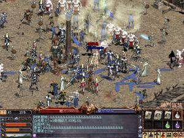
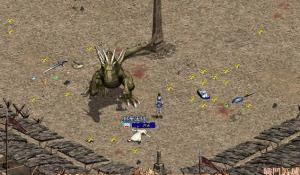

| 2002年3月31日 |
| 韓國測試伺服器更新
早前韓國測試伺服器用戶端更新為20328，除了將大喊功能重新開放外，在遊戲選項中亦增加了"交換"的開關選項，預設值是"無法使用"，即是會自動拒絕交易，大家緊記將其設為"可使用"才可以和其他人進行交易。另外亦新增了以下的新圖示，意味著將會有新道具的加入：
     戒指
戒指
    皮帶
皮帶
   項鍊
項鍊
|
| 2002年3月30日 |
| 美國伺服器開放了LinWeb功能
美國伺服器開放了LinWeb功能，大家除可以從網頁上看到自己角色的各種狀態和道具外，更可以將它們開放供其他人看(Showoff!)。另外大家亦可以查到各伺服器各城的血盟、稅率和下次圍城時間等。
有關詳情可以參考有關美國官方的報導：
http://www.lineage-us.com/news/item138.html
另外大家亦可以看看美國伺服器其中一隻強騎DREAMWORKS:
https://secure.lineage-us.com/cgi-bin/linweb_menu.pl?char=DREAMWORKS&server=1&show=doll |
| 2002年3月29日 |
| 全世界第一位死騎法師！
資料翻譯自Lineage
Compendium:
韓國伺服器的STANDING成為了全球第一位等級52的法師，他可以變身做死亡騎士呢！他是一位力法師，花了40天的時間才能由Lv49升到Lv50，接著花了70天由Lv50升到Lv52，為甚麼他升得那麼快？因為他每天玩20小時喔！
在沒用肥肥下，他在奇岩4樓不斷地打怪、打怪和打怪，他將兩點額外都放在力量上，理論上他的力量最高可達33！20（基本力量）+
5（體魄）+ 3（力杖）+ 2（力套）+ 1（力鍊）+
2（額外點數）= 33...
香港伺服器復活節活動
在復活節當日（4月1日），天堂各商人將會售賣復活蛋 ，有回復體力的功能呢！ ，有回復體力的功能呢！
詳請可以參閱官方的報導：
http://www.lineage.com.hk/lineage/lin_image/act_page/easter/easter.htm |
| 2002年3月28日 |
香港伺服器 - 地龍遁地記動畫片段
Hong Kong Server - Video of Hidden Antharas
三月二十七日晚上十一時二十四分，一群熱心的屠龍者集合在龍谷七樓準備挑戰地龍安塔瑞斯，在苦戰兩分二十七秒後，地龍終於使出它的絕招
-
遁地，時間更長達一分四十秒，足以給它回復全部體力，難度地龍依然被有關方面鎖死了，一到沒體力便會遁地？
At 27-Marth 11:24pm, a group of dragon slayers is
meeting at DV 7/f preparing to fight the earth dragon
Antharas. After fighting of 2:27, Antharas finally uses
its special ability - hide to the ground! It last 1:40
that is enough for it to recover its HP. Are the officials
still locking Antharas, that it would hide to the ground
whenever it has no HP?
香港伺服器 -
地龍遁地記動畫片段（請安裝Windows
Media Player 7.1，片長6分47秒，檔案大小約為11MB）
Hong Kong Server - Video of Hidden Antharas (Please
install Windows
Media Player 7.1)
PS:
以下為三個位置皆可下載有關動畫，因於對外頻寬不足的關係，香港地區以外的網站請勿直接連結這些檔案，最好的話請幫忙做鏡站，謝謝！
^^
You can download the video from one of the following
links, as we have not enough external bandwidth, the
websites outside Hong Kong please do not link the file
directly. If possible please host the files yourself,
thanks a lot!
http://atm.cyberec.com/~dagger/lineage/hidden_antharas.zip
http://briel.uhome.net/hidden_antharas.zip
http://briel.hypermart.net/hidden_antharas.zip
香港伺服器 -
奇岩競技場活動有玩家無故進入場地，官方GM的回覆
早前在奇岩困獸鬥活動中在活動的尾聲時，當史萊姆吃掉了地上的珍貴寶物時，突然有玩家出現並使用龍卷風殺死史萊姆，究竟真相如何？大家可以參加有關官方GM對本網的回覆（註：大家作參考好了，因為大家都知道香港GM的可信性很低）
親愛的玩家您好:
首先感謝天堂(Lineage)活動的支持！
有關"奇岩競技場"會有玩家在活動差不多完結時出現在競技場內，
原因是該玩家原本已經在競技場內參予打地龍安塔瑞斯，
但中途因為lag而導致斷線，由於他的角色在登出時是在競技場內的，
當他再次登入時，便會出現於競技場內，而並非由本公司的公作人員將他傳入的！
在我們發現該名玩家出現在競技場後，我們已經即時將該名玩家傳出場外。
事後，我們亦已經即時查看有關的遊戲歷程，該名玩家在殺死史萊姆後並沒有得到任何珍貴道具，
而當玩家用密語向GM查問有關情況時，我們均有作出回應的！
對於活動出現這樣的情況，我們亦非常關注，並會作出有關的改善，以免再有同類事情出現！
另外，身為一個個人網站之網主，希望您在張貼關於香港天堂伺服器之相關消息時，
均能經過NCGamania Co., Ltd之官方證實以維您自身公正立場之公信力，切勿發佈未經證實之個人揣測消息。
否則本公司不排除以實際法律行動維護本公司之權益。
謝謝您的來信！
阿波羅GM
NCgamania Co. Ltd.
如有問題歡迎您來信至 E-mail: server1@ncgamania.com.hk
-----Original Message-----
From: Briel / 崇 [HKLineage.com]
[mailto:info@hklineage.com]
Sent: Monday, March 25, 2002 5:31 PM
To: server1
Subject:
有關昨天的活動有玩家進入競技場的問題
你好！
昨天的奇岩困獸鬥活動在最後史萊姆吃掉了珍貴的道具後，突然出了一名玩家"同學仔"
使用龍卷風將有關史萊姆殺掉，他應該可能會拿到有關的珍貴道具，現在本網欲詢問有
關問題：
1.
為甚麼會有玩家在那時會進入格鬥場？據本網所知那名玩家在上一次奇岩格鬥活動
時亦無故出現在格鬥場中。這是否和用Bug有關，或者是貴公司人員將有關人物傳入格
鬥場中？
2. 在該名玩家進入格鬥場後，為甚麼GM沒有即時將那名玩家傳走，並容許他殺死史萊
姆？另外在大量玩家的投訴下，為甚麼GM並沒有即時解釋為何有玩家出現在格鬥場中？
請盡快詳細解釋那事，以便玩家得知事件的真相，謝謝！
Briel
HKLineage.com網主
Lineage正式登入大陸！
Lineage於昨天正式登入中國大陸市場，除了開放了大陸Lineage官方網站外，亦開始了遊戲測試，不過只限身在大陸的同胞，其他已經有Lineage(天堂)遊戲服務的地區如香港、台灣、日本、美國等將不能連接大陸伺服器。
大陸Lineage似乎是由NCSoft100%管理，興遊戲橘子無關，而遊戲名稱亦用原名"Lineage"，並不是像台灣和香港般用"天堂"的名字。
大陸Lineage官方網站： http://www.lineagechina.com |
| 2002年3月27日 |
| 香港伺服器 - 火龍窟歷險之旅活動
資料轉載自香港天堂官方網站：
http://www.lineage.com.hk/lineage/lin_image/act_page/valakas_tour/valakas_tour.asp
「火龍窟歷險之旅」
出團日期：4月5日至4月14日
相信大家還記得水之都推出時我們給大家組了一個「水之都探秘團」，當時盛況空前,各團員都盡慶而回！
你有沒有參加呢？如果錯過了，今次的「火龍窟歷險之旅」就一定不能再錯過了！
我們會讓大家在測試伺服器率先到從未有人到過的火龍窟探險，裡面有各種會噴火的怪物供大家一展身手，而且更有聞名天堂的鐵門公會公開各款珍貴防具，武器供大家參觀選購。
大家如果想參加的話，很簡單的！
測試伺服器專用測試帳號及火龍窟1.82C光碟將會隨「火龍窟限量珍藏版」及4月2日出版的TEENS
附送。
「火龍窟限量珍藏版」更會送你測試伺服器專用的夢幻道具裝備及珍藏版T-SHIRT呢！
「火龍窟歷險之旅」: 夢幻道具
測試伺服器專用的夢幻道具 /
裝備只限「火龍窟限量珍藏版」附送之測試帳號擁有。
以下列出之道具 /
裝備將由系統隨機分配到各「火龍窟限量珍藏版」附送之測試帳號之侏儒倉庫內。測試伺服器內之角色須達到5級方可取出。
武器（單手）
+11武士刀
+11北歐神劍
+11瑟魯基之劍
+11紅騎士之劍
+11力量魔法杖
+11細劍
+11鎖子甲破壞者
+11瑪那魔杖
+11銀長劍
武器（雙手）
+11雙手劍
+11獨角獸之角
+11尤米弓
+11帕格立歐巨劍
+11帕格立歐長矛
+11雙刃大砍刀
+11十字弓
+11屠龍劍
+11巨劍
防具（頭盔）
+7騎士面甲
+7抗魔法頭盔
+9艾爾穆的祝福
+7魔法師之帽 |
防具（項鍊）
力量項鍊
敏捷項鍊
體質項鍊
智力項鍊
精神項鍊
魅力項鍊
妖魔戰士護身符
防具（襯衫）
+7T恤
防具（盔甲）
+7水晶盔甲
+7抗魔法鏈甲
+9精靈金屬鏈甲
+7魔法師長袍
+7水龍鱗盔甲
+7地龍鱗盔甲
+7火龍鱗盔甲
+7風龍鱗盔甲
防具（斗篷）
+9精靈斗篷
+7保護者斗篷
+7隱身斗篷
+7抗魔法斗篷
+7紅騎士斗篷 |
防具（盾牌）
+9精靈盾牌
+7反射之盾
+7伊鞋之盾
+7銀騎士之盾
防具（戒指）
瞬間移動控制戒指
形體控制戒指
防具（手套）
+7腕甲
+7力量手套
+7鋼鐵手套
防具（靴子）
+7鋼鐵長靴
道具
沈默魔杖
沈睡魔杖
人參
香菜 |
|
| 2002年3月26日 |
| 香港伺服器 - 力量項鍊
香港伺服器出現了力量項鍊了！鳴謝籃球仔提供圖片
^^
PS: 現在已經有人出價30M買力量項鍊！（30,000,000天幣...）
|
| 2002年3月25日 |
| 奇岩困獸鬥活動花絮
昨天香港伺服器舉行了奇岩困獸鬥活動，其中入圍的101名玩家可以進入奇岩競技場和大量未登場的怪物戰鬥，其中包括紙人、密密（寶箱怪）、影魔、高崙冰石人、巨人、牛人、希爾黛斯和活鎧甲等，不過牠們掉下的物品只屬一般。之後GM便開始召喚Boss級怪物如巴風特、巴裂斯、四色長者、死亡騎士及惡魔，不過召喚的數量並不是很多，所以很快便被玩家解決，當中以惡魔所掉的力量項鍊為最珍貴。之後GM便召喚了地龍，但由於玩家們不夠團結的關係因此無法將其擊倒。最後GM召喚了水龍法利昂和地龍對戰，然後由太陽神GM擊倒了水龍並展示有關物品作為活動的結束。
到了活動的最後時，在史萊姆吃掉了有關地龍和水龍的珍貴道具後，突然出了一名玩家"同學仔"使用龍捲風將部分史萊姆殺掉，他應該會得到部分珍貴道具，在眾多玩家的投訴下GM竟然沒有解釋為何有玩家能夠進入競技場，好像事先已經知道該名玩家會進入競技場般，而且那名玩家在上一次奇岩競技場活動事亦突然出現在競技場內，難道是GM將該名玩家傳入競技場內！？
有關活動的圖片如下：（按圖放大）



|
| 2002年3月23日 |
| 奇岩困獸鬥入圍名單公佈了！
香港天堂官方網站公佈了奇岩困獸鬥的入圍名單了，大家快去看看自己入圍了沒有！
http://www.lineage.com.hk/lineage/lin_image/act_page/NPCvsPlayer/view_message.asp
PS: 網主沒有入圍... =.=
天堂火龍窟限量珍藏版
為配合天堂火龍窟四月的更新，有關方面推出了天堂火龍窟限量珍藏版，內裡除了有天堂主程式1.82C外，還有80點點數卡和正義，中立或邪惡的T恤（任撰其一），而最重要的就是和台灣一樣有火龍窟的測試帳號試玩，帳號內裡有大量的珍貴裝備，售價只為$99，各大電腦遊戲商店有售。有關詳細內容可以參考：
http://www.lineage.com.hk/lineage/events/episodeX/limitedPKG.asp |
| 2002年3月22日 |
| 日本伺服器火龍被擊倒了！
圖片來自日本的討論區：
http://isweb39.infoseek.co.jp/play/misiotan/cgi-bin/gazou/imgboard.cgi
|
| 2002年3月21日 |
| 韓國測試伺服器用戶端更新為20321
資料轉載自寶嘉康蒂ソ網站：
強化自我加速術
今天韓國測試伺服器的用戶端版本更新了20321，除了修正了使用鼠中間鍵會當機的問題外，亦新增了新魔法
- 強化自我加速術。此魔法的效果和強化自我加速藥水一樣，時限為30分鐘，消費MP及HP為80/30。 |
| 2002年3月20日 |
| 韓國測試伺服器更新 -
強化自我加速藥水
資料來自Lineage
Playforum:
http://community.playforum.net:8080/bbs/prog/column?action=read&iid=10051004&kid=1545
韓國測試伺服器由於在較早前將加速效果改為不會累積的關係，因此推出了強化自我加速藥水，加速效果為30分鐘，比一般綠水的5分鐘多了6倍，但價錢略貴，而重量為14。
香港伺服器更新 - 地獄！
今天香港伺服器更新了地獄，由今天起所有人的PK值將會由零開始，而當PK值達30次，便會傳送往地獄10分鐘。
資料轉載自香港天堂官方網站的報導：
http://www.lineage.com.hk/lineage/lineage_news.asp?tablename=news&news_num=62&act=news_list
官方3月20日天堂遊戲更新內容
開放「地獄」系統，內容及設定如下:
1. 所有角色的pk數目將重設為0。
2. pk數到達30人將自動被帶到地獄。
3. 玩家停留在地獄的時間為真實世界的10分鐘。
4. 玩家停留滿10分鐘後，將會自動被傳回村莊。
5. 玩家在地獄所遺失的任何東西(包括道具,經驗值,正義值等等)，必須自行承受，本公司不負任何責任賠償。 |
| 2002年3月19日 |
| 香港伺服器活動 - 奇岩困獸鬥
香港伺服器又有活動喇！今次活動是奇岩困獸鬥，意即在奇岩競技場內和大量怪物戰鬥，部分怪物更為未登場的呢！有關詳細內容請參考以下連結：
http://www.lineage.com.hk/lineage/lin_image/act_page/NPCvsPlayer/NPCvsPLAYER.asp
有關3月19日lag情況和斷線的補償
今天如果大家有玩天堂的話都會發現連結有些問題，大約每隔十秒便會Lag五秒，官方為此作出了解釋及補償，請參考以下連結：
http://www.lineage.com.hk/lineage/lineage_news.asp?tablename=news&news_num=61&act=news_list
香港伺服器小更新
轉載自香港天堂官方網站：
http://www.lineage.com.hk/lineage/lineage_news.asp?tablename=news&news_num=60&act=news_list
官方3月19日天堂遊戲更新內容
新手地區(歌唱之島及隱藏之谷)的買賣NPC將開始可以收購歐西思類的道具，亦可以買到燈籠和燈油。 |
| 2002年3月18日 |
| 天堂新增功能：NProtect

轉載自香港天堂官方網站：
http://www.lineage.com.hk/lineage/lineage_news.asp?tablename=news&news_num=59&act=news_list
天堂遊戲3月18日新增功能: NProtect
由於盜用事件日雛嚴重，本公司將不斷為玩家提供更佳的保障。由3月18日晚上6時開始玩家可經天堂的自動更新程式中取得天堂防毒程式「NProtect」。在每次啟動天堂主程式時，NProtect將自動啟動，為玩家的電腦進行自動檢查。「NProtect」可提供更安全的遊戲環境，但玩家亦必須更小心保管個人的遊戲帳號及密碼。 |
| 2002年3月17日 |
| NPC伺服器無故當機
今天在大約早上十時，NPC伺服器在沒有事先說明下閞閉了，導致所有NPC身上的寶物消失，浪費了玩家的寶貴時間和心血。 |
| 2002年3月16日 |
| Lineage II FAQ的中文翻譯
鳴謝台灣獅子伺服器─火封之冰提供有關中文翻譯，內容如下：
翻譯自： http://www.lineage2.com/eng/faq/faq.html
(Lineage II FAQ)
突然心血來潮而翻譯的，給站長參考，這完全是我翻譯的，如有翻譯不妥，請指教並加以更正，謝謝。
另外，若有版權問題，煩請回覆通知我，謝謝。
台灣獅子伺服器─火封之冰
敬啟
1.遊戲發展的進度如何？
A:我們正在跟一個公司的一些委託人員做遊戲測試，現在的進度大約為40%。
2.當你們製作虛擬引擎時，有改進或增加哪些部分呢？
A:引擎製作最大的部分是增加的精密的功能。原本虛擬引擎採用區域的方式。那是載入遊戲的方式。然而Linaage
II採用精密的方式讓玩家覺得他們處於巨大的異度空間。所以戰場、城鎮和地監都融合在一個巨大的區域裡。這遊戲的製作已經是相當的困難，但是我們非常滿意目前的成果。
3.跟Lineage比較起來，戰鬥系統有何不同？
A:基本上我們盡量不失去Lineage簡易的介面。將有一部份的介面會改變，因為Lineage
II和Lineage不同的地方為它是3D遊戲，然而我們將保持遊戲原本的優勢，那就是─滑鼠操控介面。
我們也將增加一些新的種族以及各階級的技能和魔法，來增加遊戲的趣味性。通常玩家會基於他們的辛勞而得到特別的獎賞，而且玩家可在戰鬥裡嘗試他們新學的技能。
4.Lineage原本的攻城、血盟、升級系統仍存在嗎？
A:攻城在Lineage II也扮演著相當重要的角色。然而在Lineage
II的攻城會在3D的環境下完成。所以更多事情，如同：空中作戰、城牆倒塌、狙擊...將可能發生。血盟在Lineage
II的社會裡是最基本的。為了有效地維持血盟，更有趣的事件將增加，如：血盟網頁、血盟聊天、可擴大功能的血盟盟屋系統。此外，我們將介紹"Alliances"也就是同盟(分盟)─血盟勢力的擴張。玩家可以在他們佔領的城堡裡看到同盟的旗幟飄揚著，而且能從同盟(分盟)的城堡獲得補助。很多有趣的事件會透過同盟(分盟)而增加。最重要的是，"'Government
Relinquishment System"(政府放棄系統)將會強大地維持血盟和同盟(分盟)系統。盟主可以分發一些權力給其他的成員，如：收人、使用盟屋和城堡的功能、收稅。如果盟主沒給任何權力，它將是個中央集權的盟。相反地，當盟主盡可能地分發權力給盟員，它將是個分權的或民主的血盟。Lineage
II的升級系統大多和Lineage一樣。玩家打怪就可獲得經驗值和升級成長。起初，玩家會在一個簡單完全的階級地位，但當他成長後，他可選擇更多屬於他自己、被指定的階級。
5.Lineage和Lineage II的故事背景有什麼關係呢？
A:Lineage II在Lineage之前有它自己150年的故事背景。在那時，甘特尚未去說話島，Decon王(Depardieu的祖父，Lineage重要的人物)也還沒出生。那是一個不穩定的時代，Aden的世界剛被統一，它有新的外觀，如同統一的城鎮。Elmore─在北方強大的國家、Gracia─在海的那一邊神秘的國家、以及Aden正處於三角奮鬥中。這150年前的世界是和Lineage不同的，但又微妙地相同。你會遇到你曾在Lineage聽過的地方、人物和怪物。
6.Lineage II會和Lineage一樣更新新的劇本事件嗎？
A:當然。我們知道一致的更新會使線上遊戲產生確實的影響。但是它的更新次數不會和Lineage一樣多，將會做二次主要的更新。但為了平衡遊戲，我們會做叫小的更新，如果有的話。
7.Lineage II需要的電腦基本配備？
A:至少CPU超過Pentium III 800, 256M RAM和Geforce2
graphic card，我們建議CPU超過gigabyte Hz(十億位組
頻率)、512M RAM或者更多，還有一種2003年前半會上市的pupular
3D graphic card。
8.當Lineage II上市時，Lineage會如何呢？
A:現在有超過70人的Lineage製作小組正在努力的製作發展Lineage，而且將會繼續更新Lineage。我們強調Lineage和Lineage
II是不同的，而且Lineage不會因為Lineage II而消失。
Lineage會依它自己的版本來發展。
9.Lineage和Lineage II的資料能互相轉換嗎？例如：帳號、角色或裝備物品的移動。
A:Lineage和Lineage II表面上的概念和故事背景是互通的，但事實上，他們是完全不同的遊戲。所以Lineage和Lineage
II的角色和物品裝備是不能移動和調換的。
10.Lineage II什麼時候開放試玩服務？
和什麼時候上市呢？
A:我們正在公司裡作遊戲測試，在今年暑假，我們將開放封閉的試玩服務，在明年的上半會上市。 |
| 2002年3月15日 |
| 天堂專題報導 - 有關第十一、十二章及Lineage
II
資料轉載自香港天堂官方網站：
http://www.lineage.com.hk/lineage/events/article/interview.htm
| 玩家們都對天堂及相關遊戲的最新消息非常感興趣，我們當然會盡力提供相關的資訊。天堂專題報導就是讓身為天堂一份子的你，都知道天堂世界的最新動向。
第一次的專題內容，就是與韓國Lineage計劃小組的負責人
── Jang Joo Hyung的訪問。這訪問昨天(3月15日)才在韓國天堂官方網站公布，我們立刻翻譯過來，務求讓大家第一時間知道最新的天堂消息。
|
| |
| 與Lineage計劃小組負責人的訪問 |
| |
| 許多玩家都關心未來Lineage會怎樣發展下去。亦關心到Lineage與開發中的Lineage
Ⅱ:The chaotic chronicle的關聯性。為了滿足玩家們的好奇心，我們準備了與負責Lineage以後計劃的Lineage計劃小組負責人
── Jang Joo Hyung的訪問內容。
以下為訪問內容:
(以下的日期為韓國天堂遊戲的開發時間表，與香港版不同)
|
| |
| 記者: |
你好。見到您真高興。首先請你對Lineage的玩家們打個招呼。 |
| Jang: |
大家好。我是Lineage計劃小組的負責人
── Jang Joo Hyung。首先感謝大家對Lineage的支持和關心。雖然目前Lineage
part 1很快就會結束，但我們會繼續努力補足不足的部份，且努力發展有潛力的部份。
希望大家以後繼續支持Lineage。因為Lineage是玩家們一起參與的遊戲。 |
| 記者: |
今年5月內將會更新episode
11‘Oren’(暫譯: 「歐瑞塔」)。請你簡單說明一下關於新的episode
11。 |
| Jang: |
「歐瑞塔」是所有法師在精神上的故鄉。到了「歐瑞塔」版，會出現之前沒有介紹過的一些新魔法和魔法系統。法師總是空著的魔法視窗，會在「歐瑞塔」可以填滿，且得到更多的輔助，開始走真正的大魔法師之路。
「歐瑞塔」不只是法師的地方，而是所有能使用魔法的職業的地方。到達「歐瑞塔」，妖精可以使用充滿妖精特性的精靈魔法。精靈魔法是利用構成Linege世界的四大元素(水、風、地、火)的魔法。目前不能說詳細內容，但王族也可以使用專用魔法。 |
| 記者: |
聽說Lineage到episode12就會結束? |
| Jang: |
首先episode 12‘Aden’(暫譯:
「亞丁城」)，並不是Lineage的完結。根據目前的開發日程，通過今年5月episode
11「歐瑞塔」之後，年底將更新episode
12「亞丁城」。
許多人認為到了「亞丁城」之後，Lineage就結束。但根本不是。Episode
12「亞丁城」不是結束，而是新開始的信號。 |
| 記者: |
那麼episode
12「亞丁城」以後，Lineage的更新日程如何? |
| Jang: |
Episode 12
「亞丁城」為最後，Lineage part 1就會完結。之後以著重於「征服」，總共有六個episode的Lineage
part 2向大家公開。
以「征服」為關鍵，更積極，更現實性的Lineage將會推出。 |
| 記者: |
Lineage
Ⅱ: The chaotic chronicle和Lineage part 2「征服」是同樣的遊戲嗎? |
| Jang: |
有很多人認為Lineage
part 2就是 Lineage Ⅱ: The chaotic
chronicle。其實Lineage part 2和 Lineage
Ⅱ:The chaotic chronicle是個別的MMORPG(Massively
MultiPlayer Online Role Playing Game)。只是Lineage
Ⅱ的背景是根據Lineage的世界觀，描述比Lineage早150年前的世界，命名為Lineage
Ⅱ。
Lineage Ⅱ跟Lineage是完全不同方式的Full
3D online game。所以，雖然進行Lineage
Ⅱ的開發，但Lineage在episode 12「亞丁城」完結之後，
以Lineage part 2的名稱來繼續進行開發。 |
| 記者: |
請說明一下有關把Lineage角色可以轉移到Lineage
Ⅱ的傳聞。 |
| Jang: |
上述的內容也說到，Lineage
Ⅱ和Lineage只是世界觀相同的個別MMORPG。所以不能把Lineage的角色轉移到Lineage
Ⅱ，也不能把Lineage Ⅱ的角色轉移到Lineage。 |
| 記者: |
謝謝。訪問就到此為止。 |
| Jang: |
謝謝玩家們的支持。我們會努力繼續發展Lineage的。 |
|
| |
想知道更多有關Lineage
Ⅱ: The chaotic chronicle的資料嗎?
去Lineage
Ⅱ: The chaotic chronicle的官方網站看看吧! |
|
| 2002年3月14日 |
| Lineage II 官方正式網站開張！
Lineage II (The Chaotic Temple) 官方網站 http://www.lineage2.com
今天正式開張了！語言可以選擇韓文或英文，內有非常詳細的遊戲設定，畫面抓圖及動畫！本網即將會將全部內容翻譯做中文，敬請留意。
Lineage II 動畫（高質素，77MB）： ftp://ftp2.lineage.com/Movie_Eng.avi
Lineage II 動畫（低質素，5MB ）： ftp://ftp2.lineage.com/Movie_Eng.wmv |
| 2002年3月13日 |
| 韓國測試伺服器重大更新
資料由本網翻譯自韓國天堂官方網站：
https://secure.lineage.co.kr/new_announcement/pre_lineage/read.asp?ListNum=16&NoticeID=2&PageNum=1
1. 綠色藥水的重量降低了。
2.
職業的類別與等級將會影響攻擊命中及額外傷害，如下：
[攻擊命中]
騎士：每3等級攻擊命中+1
妖精：每5等級攻擊命中+1
王族：每5等級攻擊命中+1
[額外傷害]
騎士：每10等級額外傷害+1
妖精：每10等級額外傷害+1（限弓）
3. 除了角色的精神(WIS)之外，職業的類別亦會影響基本的魔法防禦力(MR)，如下：
妖精：基本魔法防禦力(MR)25
法師：基本魔法防禦力(MR)15
王族：基本魔法防禦力(MR)10
4. 智力(INT)將會影響魔法的魔力(MP)消耗量，智力越高MP消耗量越低。
例如智力18的角式使用等級6的魔法時，魔力消耗量將會節省20%。
5. 力量(STR)和敏捷(DEX)對攻擊命中的影響有向上調整。
6. 瑪那魔杖吸取MP的數量將會和其造成傷害值有關，即打不中的話就不會吸到MP。
7. 有關伊娃之盾的問題已經修正了。 |
| 2002年3月11日 |
| NCSoft推出新網上角色扮演遊戲 - City of
Heroes (都市英雄)
NCSoft位於美國的分公司在今天宣佈他們將會推出新的網上角色扮演遊戲﹐此遊戲的名稱為City
of Heroes(暫譯都市英雄)﹐由Cryptic
Studios所製作﹐有關新聞稿可以參考美國天堂官方網站的報導﹕
http://www.lineage.com/nci/ncsoft_coh.html
而該遊戲的詳細資料如動畫﹐抓圖﹐遊戲系統等可以參考有關官方網站﹕
http://www.cityofheroes.com/
網主按﹕這個遊戲的角色為美國漫畫的英雄﹐非常明顯地是為了打入美國市場﹐該遊戲對於亞洲玩家來說應該沒有吸引力。
香港GM在奇岩競技場召喚思巴克女皇謀殺/誤殺玩家的圖片
鳴謝tandy(DontLoveMe)提供圖片﹐按圖放大﹕
NCSoft收購了Lineage.com網域名稱
NCSoft收購了Lineage.com的網域名稱﹐現在大家可以在瀏灠器上以
http://www.lineage.com
登入英文版的Lineage(天堂)網站。 |
| 2002年3月10日 |
| 香港伺服器無故斷線 全體玩家大斷線 GM關密不負責
本網收到一名玩家的投訢﹐內容如下﹕
香港server在白天無啦啦連續兩次斷線
第一次在 3月8日 13:25
今日HK server無啦啦offo左line
全部肥同地上ITEM無哂
第二次在 3月8日 13:58
可憐既玩家又再一次召肥~
又再一次全天堂斷線~
密GM又無回應
密其他GM~
他們關閉密語~
極不負責~
請post出我的留言~
我是香港server的"皮皮2"
另外﹐有關昨天思巴克女皇由於GM的犯錯而走出競技場攻擊玩家的事件﹐有關方面好像說會查Log(遊戲歷程)並會跟進﹐受害者一定要與GM聯絡啊。
韓國伺服器Poseidon Lv61啦﹗
資料來自Lineage
Compendium﹐由Supp翻譯﹕
韓國伺服器Poseidon現在已經等級61了﹗由於韓國伺服器的敏捷會影響防禦﹐因此他現在的防應該是-73。
61級有一共11點能力值獎勵﹐他分配了7點到力量﹐另外4點分了給體質﹐所以他的總力量值(基本23+力套2+體強5)是30,
體質是22。可能由於力量和體質太強的關係他發現他的負重有問題﹐他現向有關方面反映。
Supp: 我猜如果他在65級時加了4點敏捷﹐即是敏16每5級-1ac﹐那麼他就有
-65 - 13 = -78ac﹐只要再衝一兩件防具就可以到-80ac了﹐這解釋了為什麼他想在65級就去打地龍﹐而不是66級力25體25才去。
另外﹐在1月24日時他是用+8日本劍的。
網主按﹕如果大家有細心留意本網1月25日的報導﹐其實他在那時的等級最少58.40。
韓國測試伺服器新增了四個圖示
資料轉載自寶嘉康蒂ソ網站﹕
韓國更新更新了20308後﹐新增了四個圖示﹐似乎它們都與復活節活動有關﹕
復活蛋 (Easter Egg)
復活節信紙 (Easter Mail Paper)
台灣火龍窟動畫搶先看
台灣官方網站方上了火龍窟的動畫﹐大家可以在以下連結下載﹕
http://www.gamania.com/lineage/download/fire.exe
香港奇岩競技場活動 - 更多圖片
鳴謝KK Law提供以下圖片(按圖放大)﹕

|
| 2002年3月9日 |
| 香港伺服器奇岩競技場活動 - 香港GM再次失職﹖
昨天香港伺服器舉行了奇岩競技場活動﹐形式和早前日本伺服器的差不多﹐GM在奇岩格鬥場召喚一系列的高級怪物仍戰地龍和水龍﹐在地龍或水龍死後給玩家觀看牠們珍貴的掉下物。
然而在整個活動中香港GM了一個嚴重的錯誤﹐就是在召喚思巴克女皇時忘記了即時攻擊水龍﹐結果有關思巴克女皇隨即傳送往競技場外攻擊玩家﹐造成大量玩家死亡﹐他們當然失去了寶貴的經驗值和道具。
另外在活動途中突然出現了一名玩家在競技場內﹐不過比較可笑的是那名玩家竟然只檢了地上的50金幣﹐而不去檢珍貴的道具如瑟魯基之劍﹐智鏈和力鏈。
而當GM想仿傚日本伺服器利用海音村衛殺死地龍時﹐卻召喚錯了海音城守﹐由於海音城守與地龍的等級有一遠距離﹐因此即使GM攻擊地龍後有關城守是不會攻擊地龍的﹐結果GM走到地龍旁﹐看似是地龍與村守互攻﹐其實只是地龍及村守一起攻擊GM。
本網討論區版主SoNic已經將整個競技場活動拍攝了Video﹐時間長遠2多小時﹐我們將會以最快的時間製作有關動畫。
以下是有關活動的部分圖片(按圖放大)﹐請留意當中的玩家說話內容
:P


English: Today Hong Kong Server have a Grian arena
event which is similar to the one happened in Japanese
server before. GM summoned lots of high level monster and
let them fight Antharas and Fafurion.
However, GM make a fault in the event. When she
summoned the succubus queens, they
forgot to attack the dragons immediately. So the succubus
queens teleport out of the Grian and kill tons of players!
Of course many players drop valuable experiences and
items.
Also, in the middle of fight, one
player suddenly appear in the arena. The funny thing is
that he pick up 50 adena on the ground instead of tsurugi,
STR-ammy and INT-ammy!
香港官方網站更新 - 天堂網站工具箱
香港官方網站更新了天堂網站工具箱﹐這個工具箱其實在兩個月前韓國官方網站已經放了出來﹐而本網的外觀亦是
根據其中的一個範本。此工具箱含大量高質素及精美圖片﹐如角色及怪獸的3D
Render圖﹐Q版的角色圖﹐還有大部分道具的圖片及網頁範本﹐對於製作天堂網站的玩家非常有幫助﹗有興趣者可以到以下連結下載﹕
http://www.lineage.com.hk/lineage/download/fansite_kit/FanSiteKit.zip
詳細內容可參考﹕
http://www.lineage.com.hk/lineage/lineage_FanSiteKit.htm |
| 2002年3月8日 |
| 香港伺服器 - 地龍 VS 水龍
今天晚上9:00香港伺服器將會有地龍
VS 水龍表演﹐地點為奇岩競技場﹐有興趣的話一定要去看呵﹗
(如果網主身在香港一定會製作動畫﹐可惜...) |
| 2002年3月7日 |
| 香港天堂官方網站更新 - 火龍窟介紹
香港天堂官方網站更新了火龍窟的介紹﹐有興趣的話可以到以下連結瀏灠﹕
http://www.lineage.com.hk/lineage/lin_image/act_page/preview_lair/preview.asp |
| 2002年3月6日 |
| Lineage2.com更新
Lineage2.com再度更新了﹐放上了第三段動畫﹐而且動畫中的對話內容是英文的﹐同樣地亦增加了有關桌布﹐有興趣的話請參考以下連結﹕
http://www.lineage2.com/t3.html |
| 2002年3月5日 |
| 火龍窟重要裝備製作資料
資料轉載自寶嘉康蒂ソ網站﹕
 瑟魯基之劍
[16/10•重120•單•成功+2] 瑟魯基之劍
[16/10•重120•單•成功+2]
所需材料﹕奧根(500) ＋ 高品鑽(5) ＋
高品綠(5) ＋ 高品藍(5) ＋ 高品紅(5) ＋
阿西塔基奧的灰燼(30)
|
 水龍鱗盔甲
[-9•重300] 水龍鱗盔甲
[-9•重300]
所需材料﹕水龍鱗(15) ＋ 奧根(1000) ＋
米索莉線(500) ＋ 阿西塔基奧的灰燼(10)
＋ 高品綠(5)
|
| 地龍鱗盔甲
[-9•重300]
所需材料﹕地龍鱗(15) ＋ 奧根(1000) ＋
米索莉線(500) ＋ 阿西塔基奧的灰燼(10)
＋ 高品鑽(5)
|
 火龍鱗盔甲
[-9•重300] 火龍鱗盔甲
[-9•重300]
所需材料﹕火龍鱗(15) ＋ 奧根(1000) ＋
米索莉線(500) ＋ 阿西塔基奧的灰燼(10)
＋ 高品紅(5)
|
| 風龍鱗盔甲
[-9•重300]
所需材料﹕風龍鱗(15) ＋ 奧根(1000) ＋
米索莉線(500) ＋ 阿西塔基奧的灰燼(10)
＋ 高品藍(5)
|
|
| 2002年3月3日 |
| 日本伺服器新手活動 - 特殊項鏈
早前寶嘉康蒂ソ網站所放上的五個像項鏈的新道具﹐原來是日本伺服器的新手活動道具﹐官方原文可以參考﹕
http://www.lineageonline.jp/support/020301event.shtml
簡單來說只要角色等級有六或以上﹐而且是女性角色的話(性別歧視)﹐就可以到正義神殿找傳說中的旅行商人﹐用錄石﹐紅寶石﹐綠寶石及藍寶石分別交換真實﹐熱情﹐幸運與希望項鏈﹐如果有齊四種寶石的話更可換奇跡項鏈﹐不過有關項鏈應該只作收藏之用﹐並無實際用途。 |
| 2002年3月2日 |
|
香港GM濫用權力干涉玩家事件繼續跟進
Follow-up to the case of Hong Kong GM
abusing their power (please see below the Chinese text)
(圖片來自GM)
本網到目前為此(香港時間3月8日 0:00)仍未收到香港天堂官方(server1@ncgamania.com.hk)對本網跟進電郵的回覆﹐由此本網唯有跟據先前官方公佈的資料及資深玩家提供的資料﹐為該事件作了以下小結﹕
1. 2月27日9:30pm左右﹐有一大批玩家組成了地龍團和地龍戰鬥。
2. 在戰鬥中途香港天堂官方人員有可能更改了新系統設定值﹐使龍谷七樓突然會出現思巴克及思巴克女皇。假如屬實本網覺得此舉與直接召喚思克巴及女皇沒有分別﹐只不過可能可以走過遊戲管理員守則的"法律罅"﹐公佈給玩家時好聽點及渾淆視聽。
3. 官方公佈"思巴克和思巴克女皇身上的道具也特別和其它樓層的思巴克不同"﹐但並沒有直接地說"思巴克及女皇會掉比其他樓層更好的東西"﹐因此可見有關思克巴及女皇極有可能會掉更差的東西或不會掉東西﹐假如屬實本網對於官方用這些字眼誤導玩家深表憤怒。
4.
官方說地龍會主動攻擊思巴克和思巴克女皇﹐這可能會誤導玩家以為站在一旁便獲得思巴克和思巴克女皇的珍貴道具﹐因為
1)根據上一點﹕有關思克巴及女皇極有可能會掉更差的東西或不會掉東西
2) 當地龍殺死有關怪物時﹐掉下物品會上地龍身上﹐而不會掉在地上。
5. 在事件發生後香港天堂官方隨即將所謂的"新系統設定"改回﹐本網覺得有毀滅証據之嫌﹐除了不能讓玩家確認龍谷七樓是否真的會出現思巴克及思巴克女皇外﹐亦不能讓玩家得知有關怪物是否會掉不同的東西或會不會掉東西。
6. 官方說有關新系統調整的主要原因是﹕"主要是因為伺服器初開啟時，有少數不肖玩家利用Bug及外掛程式複製道具，為顧及整體玩家之權益才做此調整。"﹐但據本網得知有關事件是發生在伺服器正式開啟之前﹐日期為2001年7月5日之前﹐而且所有直接有關﹐間接有關甚至只有少許關連的帳號已經被禁止﹐加上這已經是超過半年的事件﹐有關事件對於目前遊戲的平衡基乎是沒有影響。再加上同類事件亦有出現在其他地區天堂伺服器上﹐結果都沒有特別更改遊戲設定。假如屬實本網覺得官方企圖利用這次事件誤導玩家的觀點。
Until now (Hong Kong Time 5-Feb 0:00) we still do not
receive the reply from the Hong Kong
Gamania(server1@ncgamania.com.hk) about the follow-up to
the case. Therefore according to the information published
by the official and collected from some experience
players, we make the following conclusion:
1. Around 27-Feb 9:30pm, there were a lot of players
made up a Anthras team and fought with Antharas.
2. In the middle of fight, the Hong Kong Lineage Staff or
GM changes the settings of the system. It makes succubuses
and succubus queens suddenly appear on
DV 7/F. If this is real, there is no differences between
summoning them directly or changing the settings
(indirectly), thought the GM may escape from the rule of
GM and it sounds better to the players.
3. The official said "Those succubuses and succubus
queens will drop different items from the one in different
floor", but they did not said "Those monsters
will drop better items" directly. So very likely they
will drop worthless items or even no items. If this is
real, we are very angry with the Hong Kong official since
they use those words to divert players' view.
4. The Hong Kong official said Antharas will attack succubuses
and succubus queens, it may make some
players feel that they can pick up the valuable items from
the succubuses and succubus
queens by just standing aside. We should notice that 1)as
stated as above, they very like drop worthless items or
even no items. 2) when Antharas kill those monsters, the
items will go into the Antharas body.
5. After the incident, the Hong Kong official rollback the
so-called "new system settings", so we think
they are removing the evidence. Not only players cannot
check whether succubuses and succubus
queens are on DV 7/F, also they cannot check whether they
have better drops.
6. The Hong Kong official claims they have the new systems
setting mainly due to the case of items duping. As we know
the case was happened over half year ago and all the
accounts involved directly or indirectly were banned.
There is no affection to the current game play right now.
Also the similar duping cases also happened in the other
countries' servers, and they did not do anything special
to change the game settings. If this is real, we thought
the official is using the duping case to divert players'
view.
韓國正式伺服器更新 - 重點﹕水價上升
敏捷等級與防禦關係 寵物暴走問題解決
相信香港伺服器在不久亦會更新以下資料﹐資料由本網翻譯自韓國天堂官方網站的正式公告﹕
https://secure.lineage.co.kr/new_announcement/update/read.asp?ListNum=98&PageNum=1
1. 強力治癒藥水(橙水)和終極治癒藥水(白水)會變成連續加體力﹐因此售價上漲了﹐橙水的基本售價由125提升至200﹐白水則由500提升至600。注﹕本網猜想"連續加體力"的意思是喝了水後會一直慢慢回復體力一段小時間﹐效果會比已前好。
2.
更新後敏捷和等級將會影響人物的防禦﹐關係如下﹕
| 基本敏捷 |
每隔多少等級昇一點防禦力 |
| 18 |
4 |
| 16-17 |
5 |
| 13-15 |
6 |
| 10-12 |
7 |
| 7-9 |
8 |
有關防禦的提升只會考慮基本敏捷值﹐其他額外的敏捷如裝備和魔法是不會計算在內的。
3. PK人時變紫名的時間由15秒加長至30秒。
4.
巴風特在登場時會同時大喊及將玩家傳送回說洞二樓入口。
5. 攻城時間不可以設定在上午6時至中午12時。
6.
修正了裝備了伊娃之盾後﹐受到的傷害會增加的問題。
7. 有關狗狗會暴走(亂打玩家)的問題修正了。
8. 修正了其他小問題。
|
| 2002月3月1日 |
| 香港GM濫用權力干涉玩家事件有關方面的回覆及本網的跟進
(Hong Kong GM abuse their power case to interference
players: offcial reply and our follow-up, see below the
Chinese Text)
本網今天收到遊戲管理員對有關事件的回覆﹐內容如下﹕
致 Briel/崇
首先很感謝你對天堂(Lineage)的支持和熱愛!!
關於此事我可以做個說明，只是我有一件事情必須先提醒你。
記得上一次也有玩家投訴有關點數卡的問題，而被GM禁言一事，你至今並沒有將我
們的回覆放在你網站上Post給其它玩家過目，造成目前有部份玩家始終對一月份點
數卡事件有所誤會。希望你能先履行此事並且真正站在客觀的角度上看待所有關於
天堂(Lineage)的聲音。此事件，也希望能post上本公司的回覆，不要再造成玩家
們的誤會。謝謝你的合作!!
關於地龍方面，地龍安塔瑞斯在龍7F的情況，在以前大家的印象中只有安塔瑞斯自
己和一些史萊姆NPC。
事實上在前幾次的更新時，香港伺服器在龍7F已經調整成和其它地區伺服器有些許
的不同，考慮此事是因為香港伺服器本身的遊戲設定已經比其它地區伺服器難度較
低，且伺服器初開啟時，已有部份不肖玩家利用Bug複製道具，相信此事你個人也
非常明白。故造成目前香港玩家的裝備和防具的攻擊力和防禦力都比其它地區的玩
家來的強大。所以才有此次些許的不同。
在此次事件中，本公司也發現一件事情，在香港伺服器內非常之少的玩家會嚐試去
打水龍和地龍，太久沒有去過龍7F和水底看看安塔瑞斯和法利昂，才會有此次的誤
會。希望玩家們不要在第一次的嚐試下吃到敗仗之後，就灰心了!!
加油!!我相信在香港伺服器內一定會出現有玩家打倒安塔瑞斯或法利昂的輝煌戰
績，五十級的騎士都已經出現了，所以真的沒有不可能的任務。
龍7F除了有安塔瑞斯以外也會有機會出現思巴克和思巴克女皇，這是新的設定內系
統隨機產生。玩家其實不用擔心此事，因為安塔瑞斯會主動攻擊思巴克和思巴克女
皇，畢竟安塔瑞斯是龍7F的大佬，牠不容許有其它NPC的出現而搶佔牠在龍7F的地
位。
在此非常慎重嚴明，本公司的工作人員並不會濫用權力去干涉玩家們進行遊戲。這
一點請各位玩家放心!! 此次二百多人下龍7F去打安塔瑞斯，如果沒有事前的計劃和安排，又加上每個玩家
們各懷鬼胎的話，我相信安塔瑞斯是沒有那麼容易被打敗的，我們非常樂意見到這
種壯觀的畫面，此次可以說是伺服器開啟之後最壯觀的一次。我們開心都來不及
了，怎麼會去做幫地龍加速和補血等荒唐的事呢?
目前龍7F有出現思巴克等NPC的設定已經移除，香港玩家們大可放心，隨時歡迎玩
家親蒞龍7F，屠殺安塔瑞斯奪取難得一見的寶物。
遊戲管理員 NCgamania Co. Ltd.
遊戲管理員 NCgamania Co.
Ltd.
另外以下是官方網站的公告﹐內容有些出入﹐例如給本網的回覆是沒有提到思克巴會掉不同的道具﹕
近期內天堂遊戲相關網站發表訊息之說明!!
近日有香港天堂(Lineage)某相關網站發表未經本公司證實之錯誤訊息，造成了諸多玩家的誤解及不便，本公司深表遺憾！
有關報導內容提及「香港GM濫用權力干涉玩家進行遊戲」，本公司鄭重表明該項絕非事實，以下將就此一事件內容說明：
過去大家的印象中，認為龍7F只有安塔瑞斯和史萊姆而已，事實上在前幾次的改版更新時，香港伺服器在龍7F部份已略為調整成與其它國家地區伺服器稍許不同，主要是因為伺服器初開啟時，有少數不肖玩家利用Bug及外掛程式複製道具，為顧及整體玩家之權益才做此調整。調整後，龍7F除了有安塔瑞斯以外也有機會出現思巴克和思巴克女皇，這是新的設定內系統隨機產生。而且在龍7F的思巴克和思巴克女皇身上的道具也特別和其它樓層的思巴克不同，在玩家辛苦打到龍7F時，無法打倒安塔瑞斯的情況下還有另一個選擇；此外，安塔瑞斯也會主動攻擊思巴克和思巴克女皇，畢竟安塔瑞斯是龍7F的大佬，牠不會容許有其它NPC的出現而搶佔牠在龍7F的地位。對於首次參與屠龍的玩家而言，此次在驚恐中造成了慘烈的犧牲將是個永遠難忘的經驗。希望玩家們不要在第一次的嚐試下吃到敗仗之後，就灰心了!!
本公司非常感謝香港玩家的支持和熱忱，從去年九月份起，本公司努力地更新遊戲進度並舉辦各式活動，以期拉近與其它地區伺服器的服務品質，相信這是香港玩家有目共睹!!在伺服器開啟不到一年的時間內，香港就已經出現了五十級的騎士，所以我們相信沒有什麼「不可能的任務」能夠阻擋香港的「天堂」玩家，我們同時相信香港玩家一定能創造打倒安塔瑞斯或法利昂的輝煌戰績。
當然面對玩家的反映，本公司決定將恢復原始遊戲設定，目前龍7F會出現思巴克等NPC的設定已經移除，歡迎玩家繼續征戰龍7F，屠殺安塔瑞斯奪取難得一見的寶物！
本網按﹕首先有關一月點數卡投訴事件的官方回覆﹐由於官方給本網的回覆內容涉及有關玩家的私人資料﹐由此本網覺得跟據私隱條例本網不能將其內容公佈。本網覺得有關方面如果想本網公佈有關事件的官方回覆﹐應該在電郵中刪去有關玩家的部分資料。
而遊戲管理員的回覆重點如下﹕
- 當天的確在龍谷7/F有出現思克巴和思克巴女皇。
- 這是新系統的設定﹐她們會比上幾層的掉不同的東西。
- 目的是給玩家在不能擊到地龍下的另一選擇。
- 事件發生後他們已經將此設定取消﹐即龍谷七樓再不會出現思克巴和思克巴女皇。
本網仍然覺得官方的回覆的全面性及真實性有所壞疑﹐因此詢問了很多玩家的經驗及意見﹐重點如下﹕
- 他們表示在之前一天及以前﹐龍谷七樓從來沒有出現過思克巴及思克巴女皇。
因此是否只有當天在龍谷七樓出現思克巴及女皇﹖假如官方的回覆是真的話是否意味著只有當天或當家打地龍時使用新系統﹖另外在事件後官方隨即將有關設定改回﹐這是否有毀滅証據之嫌﹖因此本網向官方發了一封跟進的電郵﹐內容如下﹕
覆 貴公司
本網收到
貴公司對該事件的回覆﹐現欲查詢更多資料以給各玩家一個清淅的答案。
首先有關一月點數卡投訴事件的官方回覆﹐依本人記憶由於官方給本網的回覆內容涉及有關玩家的私人資料﹐由此本網覺得跟據私隱條例本網不能將其內容公佈。本網覺得
貴公司如果想本網公佈有關事件的官方回覆﹐應該在電郵中刪去有關玩家的部分資料。
有關地龍事件 貴公司提到這是因為新系統的設定﹐因此龍谷7/F有出現思克巴和思克巴女皇﹐但有玩家表示他們在之前一天及以前均沒有在龍谷七樓發現思克巴和思克巴女皇﹐本網欲知
貴公司所指的新系統設定是否在事件發生當天首次啟用﹖
另外
貴公司在事件後隨在龍谷將會掉不同物品的思克巴和思克巴女皇的設定取消﹐你不覺得這樣做會令玩家失去殺死她們以獲得不同道具的機會﹖另外此舉會否令人覺得
貴公司正在毀滅龍谷七樓會出現思克巴的証據﹖
本網會繼續將貴公司的回覆盡快公佈﹗
Briel / 崇
香港天堂非官方網站 HKLineage.com 網主
Hong Kong GM abuse their power case to interference
players: offcial reply and our follow-up
Today we received the reply email from GM, the main
points they said in the email is as below:
- They confirmed succubuses and succubus
queens have appear on DV 7/F on that day.
- They said DV 7/F have such
monsters due to the new system setting and they will
drop different items compared to the original ones.
- They said those monsters acting
as an alternatives if you cannot kill Antharas.
- After the incident, they
rollback the settings so succubuses and succubus
queens will not appear anymore on DV 7/F.
We really suspect the correctness
of the official reply, since many players stated that they
never saw succubuses and succubus
queens on DV 7/F before that day. So is the "new
system setting" only start on that day or that
moment, and then they rollback the systems afterwards? So
are they removing the evidence?
Therefore we write a follow up to
them. Asking them when the new systems applied and are
they attempt to remove the evidence. [I hope other
international webmaster can forwards this news to their
website, so more people can know the facts]
新魔法圖片
原作者當然是Nue﹐由於時間問題(本人只有5分鐘的電腦室使用時間)請往以下網頁觀看﹕
http://www2.hkedcity.net/citizen_files/aa/dy/qq7141/myresources/200202/261/430126844.htm
香港天堂背景音槳更新

香港天堂將會於3月8日更新天堂背景音槳﹐不過現在可以率先下載了﹐有關詳情及步驟請參考官方網頁﹕
http://www.lineage.com.hk/lineage/lineage_bgmUpdate.htm |


{kind=link}
{kind=link}
{kind=link}
{kind=link}
{kind=link}
{kind=link}
{kind=link}
{kind=link}
{kind=link}
{kind=link}
{kind=link}
{kind=link}
{kind=link}
{kind=link}
{kind=link}
{kind=link}
{kind=link}
{kind=link}
{kind=link}
{kind=link}
{kind=link}
{kind=link}
{kind=link}
{kind=link}
{kind=link}
{kind=link}
{kind=link}
{kind=link}
{kind=link}